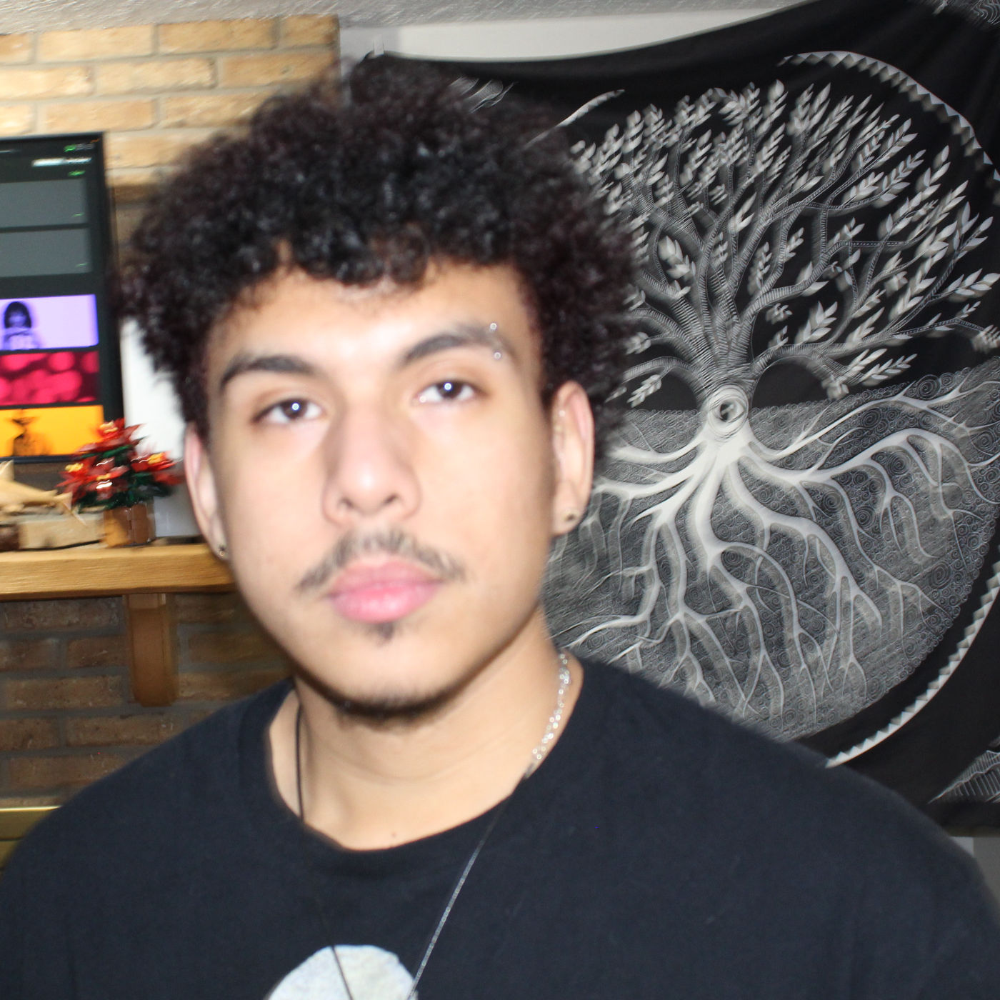

Hi, my name is Carlo Jose Martinez. I am a Junior at Illinois State Univeristy studying Creative Technologies: Audio and Music sequence. Music has always been a passion for me, I was in band for 7 years. My main instrument was Percussion. I was in the marching band (Bass Drum 4), Jazz Band (Drum set and auxilary percussion), and the mariachi club (Guitar). In my free time, i'm always working on how I can improve myself musically. I like to play guitar, some piano, some drums.
